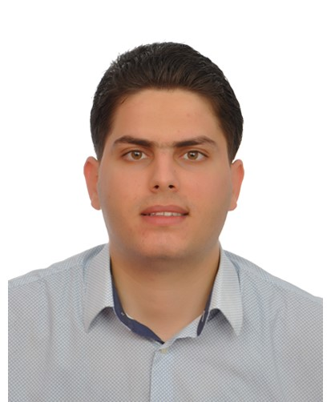

About
Telecommunications Engineer (ENET'COM) and M2 Data Scientist (UCBL Lyon 1), currently Research Engineer at Université Paris-Saclay (UVSQ) and ECE Paris. I build end-to-end data and security systems — from ingestion and modelling to containerised production services — with a strong foundation in networking, cybersecurity and 5G/V2X research.

Cross-functional Engineer — Data, Security & Networks.
Three years of professional experience across research (5G-NR V2X, Deep Reinforcement Learning), cybersecurity engineering (SIEM/SOC, MITRE ATT&CK, hardening), data science (PyTorch, NLP, LLMs/RAG) and DevSecOps (Docker, Ansible, GitLab CI). I enjoy taking a problem from raw data — or from a threat model — all the way to a monitored, documented production service.
- Location: Paris 13e, France — mobile nationwide
- LinkedIn: oussema-abdelmoula
- GitHub: @oussemaenet
- Email: oussema.abdelmoula@gmail.com
- Languages: French (native), English (C1), Arabic (native)
- M2 Data Science: Université Claude Bernard Lyon 1 (2023–2024)
- Engineering Diploma: Telecommunications & Cybersecurity — ENET'COM (2020–2023)
- Focus: Data Science · Cybersecurity · DevOps · 5G/V2X Networks
- Certifications: 13+ — Cisco, Microsoft Azure, Huawei, DeepLearning.AI, Scrum
- Open to: CDI & CDD in the Paris region and nationwide
What I'm working on
Currently leading research on AI-assisted V2V communications (5G-NR sidelink, Deep Reinforcement Learning) at the DAVID and LyRIDS labs. Alongside, I ship end-to-end data products — from pipeline design to model serving to observability — with a particular interest in MLOps, production-grade deep learning, secure cloud architectures and Generative AI (LLMs, RAG).Skills
A cross-functional toolkit built over three years of research, security and data engagements.
Focus areas
- Data Science & AI: PyTorch, TensorFlow/Keras, Scikit-learn, CNN (ResNet), Transformers (BERT), LLMs (Mistral-7B), RAG, LangChain, Computer Vision (OpenCV, YOLO), NLP, Reinforcement Learning.
- Data Engineering & BI: Elasticsearch, Kafka, Logstash, PostgreSQL, SQL Server, MongoDB, SSAS (MDX), Power BI (DAX, Power Query), Spark (notions), Vector DBs.
- Cybersecurity & SOC: SIEM (Elastic Stack), MITRE ATT&CK, Threat Intelligence, IDS/IPS (Snort), EDR, Winlogbeat, Sysmon, Auditd, Wireshark, Active Directory (Kerberos, GPO, Tier 0), Hardening (CIS), ISO 27001, EBIOS RM.
- DevSecOps & Cloud: Docker (rootless, multi-stage), Kubernetes, Docker Compose, Ansible, GitLab CI/CD, HashiCorp Vault, Git, Linux (Debian, Ubuntu, CentOS), Azure.
- Networks & Telecoms: TCP/IP, Routing (OSPF, BGP — CCNA), QoS, 3G/4G/LTE, 5G-NR, C-V2X sidelink, GENEX Probe, TEMS Investigation, OMSTAR.
Resume
Professional summary. A full PDF version is available for download below — specialised versions (Data Science, Cybersecurity, DevOps, Research, Telecoms) are available on request.
Summary
Oussema ABDELMOULA
Telecommunications Engineer and M2 Data Scientist with three years of professional experience. Cross-functional profile across Data Science, Cybersecurity (SIEM/SOC), DevOps and 5G/V2X networks. Published research in IEEE venues. Open to full-time roles in Paris and nationwide.
- Paris, France — mobile nationwide
- oussema.abdelmoula@gmail.com
- linkedin.com/in/oussema-abdelmoula
- github.com/oussemaenet
Education
Master 2 — Data Science
2023 — 2024
Université Claude Bernard Lyon 1, France
- Machine learning, deep learning, big data, cloud computing.
- End-of-study project: end-to-end document classification with a custom ResNet, served via FastAPI and Docker Compose.
Engineering Diploma — Telecommunications & Cybersecurity
2020 — 2023
ENET'COM — National School of Electronics and Telecommunications, Sfax, Tunisia
- Specialisation in Cybersecurity and Network Engineering.
- Coordinator of projects at the IEEE ENET'COM Student Branch.
Licence (BSc) — Electronics & Telecommunications
2017 — 2020
ENET'COM, University of Sfax, Tunisia
Professional Experience
Research Engineer — AI-assisted V2V & 5G-NR
Dec 2024 — Present · Paris, France
Laboratoire DAVID (UVSQ · Université Paris-Saclay) & LyRIDS (ECE Paris)
- Designed adaptive configurations for 5G-NR V2V routing and resource allocation.
- Implemented Deep Reinforcement Learning agents (AIRL, DDQN) in PyTorch for dynamic resource management.
- Statistical analysis of robustness (latency, reliability, throughput); 3 IEEE publications in preparation / submitted.
Data & Cybersecurity Engineer — SIEM & Detection
Apr 2024 — Sept 2024 · Lyon, France
Cyber Expert — Industrial critical environment
- Designed a distributed SIEM architecture on Elasticsearch and Kafka (~20 GB/day of logs) with Ansible-automated deployment.
- Correlation rules aligned on MITRE ATT&CK (Pass-the-Hash, DC-Sync, lateral movement) + behavioural anomaly detection (Isolation Forest).
- Hardening (CIS Benchmarks), AD Tier 0 (Kerberos, GPO), iptables/PfSense segmentation, PKI/TLS, HashiCorp Vault for secrets.
R&D Engineer — TinyML & Embedded Systems
Mar 2023 — Sept 2023 · Leipzig, Germany
HTWK Leipzig
- Ported quantised TensorFlow Lite models onto a 16-bit MSP430 microcontroller.
- Implemented C/C++ compression algorithms for wireless sensor networks (WSN).
RNO Engineer — Mobile Network Optimisation
Jul 2022 — Sept 2022 · Tunis, Tunisia
Huawei Enterprise — Telecoms operator client
- Daily on-site interventions: RF drive tests (3G/4G/LTE) with GENEX Probe.
- KPI analysis (RSRP, RSRQ, SINR, BLER) with TEMS Investigation and OMSTAR.
- Diagnostic and resolution of coverage issues (Drop Calls, Pilot Pollution, Handover).
Biometrics & Computer Vision Engineer
Jun 2022 — Jul 2022 · Sfax, Tunisia
CRNS — Digital Research Center of Sfax
- Iris recognition pipeline (OpenCV, CNN) deployed on Android for secure on-device authentication.
Certifications
Cisco CCNA (200-301) — Network Fundamentals
Cisco Systems
Cisco CyberOps Associate (CBROPS 200-201)
Cisco Systems
Cisco DevNet Associate (DEVASC 200-901)
Cisco Systems
Huawei HCIA — Security & Cloud Computing
Huawei
Microsoft Azure Fundamentals (AZ-900)
Microsoft
Microsoft Azure AI Fundamentals (AI-900)
Microsoft
Microsoft Azure Data Fundamentals (DP-900)
Microsoft
Microsoft Security Fundamentals (SC-900)
Microsoft
Microsoft 365 Fundamentals
Microsoft
Dynamics 365 Fundamentals (CRM & ERP)
Microsoft
TensorFlow Developer Professional Certificate
DeepLearning.AI — Coursera
Deep Learning Specialization
DeepLearning.AI — Andrew Ng — Coursera
Scrum Foundation Professional (SFPC)
CertiProf
Projects
End-to-end projects across Data Science, Cybersecurity and BI. The full list lives on GitHub.
Document Classification Engine — End-to-End Deep Learning
Custom ResNet trained on RVL-CDIP (16 document classes), served through FastAPI and consumed by a Streamlit front-end. Containerised with Docker Compose.
Stack: Python, PyTorch Lightning, FastAPI, Streamlit, Docker.
End-to-End BI Pipeline — SQL Server, SSAS, Power BI
Dimensional data warehouse (star schema) on SQL Server, multidimensional OLAP cube on SSAS with MDX calculated members, Power BI reports and a web dashboard.
Stack: SQL Server, T-SQL, SSAS, MDX, Power BI, Chart.js.
Secure AI Gateway — On-Premise LLM & RAG
On-premise Generative AI assistant built on Mistral-7B + RAG (LangChain, Vector DB), containerised with rootless Docker. Zero data leak (prompt sanitisation, DLP).
Stack: Mistral-7B, LangChain, Vector DB, Docker, FastAPI.
AI-assisted V2V — 5G-NR Sidelink
Deep Reinforcement Learning (AIRL, DDQN) for dynamic resource allocation in 5G-NR V2V communications. Monte Carlo reliability analysis.
Stack: Python, PyTorch, SciPy, NS-3 (notions).
SIEM & Anomaly Detection — Elastic Stack
Distributed SIEM architecture (Elasticsearch + Kafka) with correlation rules aligned on MITRE ATT&CK and ML-based behavioural anomaly detection (Isolation Forest).
Stack: Elasticsearch, Kafka, Kibana, Python, D3.js, Ansible.
Iris Biometrics — Android On-Device Auth
Full image-processing pipeline (segmentation, CNN, OpenCV) for iris-based authentication, deployed on Android for secure on-device inference.
Stack: Python, OpenCV, TensorFlow Lite, Android.
Contact
Open to full-time opportunities. Feel free to reach out via email or LinkedIn.